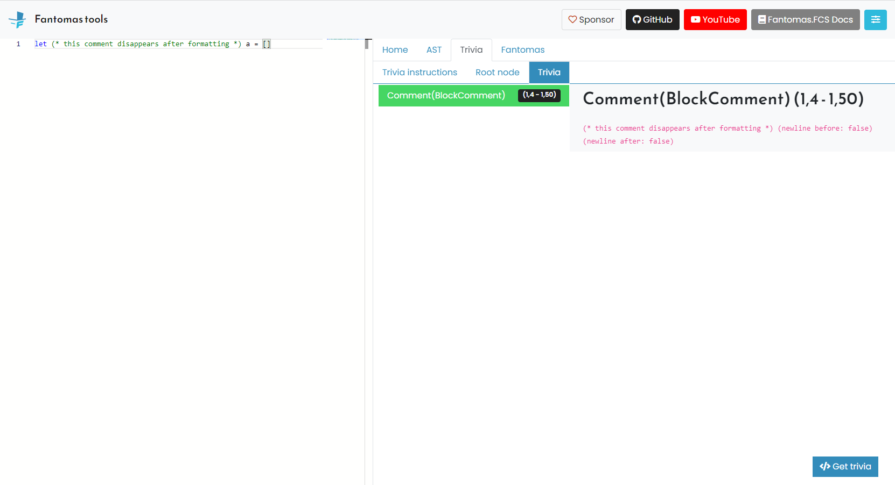
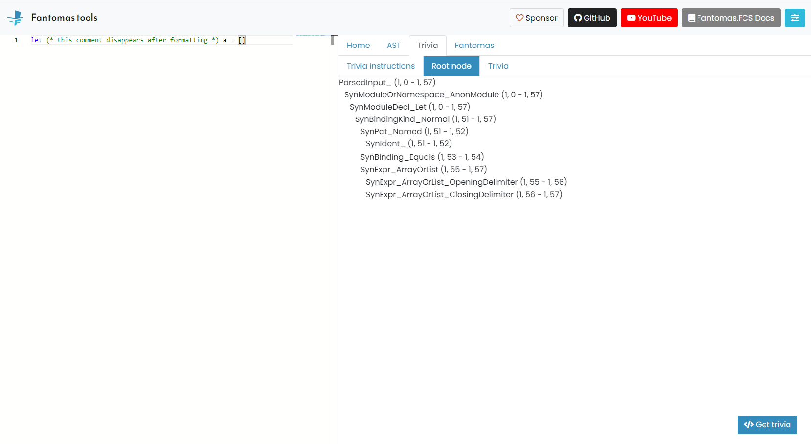

The Missing Comment
Code comments can literally exist between every single F# token. I'm looking at you block comment (* ... *).
As explained in Detecting trivia, we need to do quite some processing to restore code comments.
In this guide, we would like to give you seven tips to restore a missing comment!
Breathe
We understand it very well that losing a code comment after formatting can be extremely frustrating.
There is no easy fix that will solve all the missing comments overnight. Each case is very individual and can be complex to solve.
May these steps help towards fixing your problem!
Isolate the problem
Before we can commence our murder mystery, it is best to narrow down our problem space.
Example (#2490):
let (* this comment disappears after formatting *) a = []
type A =
{
X : int
...
}
while true do ()
Using the online tool, we can remove any code that isn't relevant.
The type and while code can be trimmed and the problem still exists.
Check the syntax tree
Every code comment should be present on the root level of the syntax tree. ParsedImplFileInputTrivia or ParsedSigFileInputTrivia should contain the comment.
ImplFile
(ParsedImplFileInput
("tmp.fsx", true, QualifiedNameOfFile Tmp$fsx, [], [],
[ ... ], (false, false),
{ ConditionalDirectives = []
CodeComments = [BlockComment tmp.fsx (1,4--1,50)] }))
If the comment is not there this means the F# lexer and parser didn't pick up the comment. In the unlikely event this happened, this should be fixed first over at dotnet/fsharp.
Was the comment detected as TriviaNode?
Fantomas grabs the comments straight from the syntax tree, and transforms them as TriviaNode.
These TriviaNode are inserted into our custom Oak tree.
This is a fairly straightforward process, and you can easily visually inspect this using the online tool.

If your comment does not show up there, it means there is a problem between getting the information from the syntax tree and constructing the Trivia in Trivia.fs.
You can put a breakpoint on addToTree tree trivia to see if all Trivia are constructed as expected.
Was the TriviaNode inserted into a Node?
The TriviaNode needs to be inserted into a Node inside the Oak.
Choosing the best suitable node can be quite tricky, there are different strategies for different TriviaContent.
In this example MultipleTextsNode (let keyword) and IdentListNode (a identifier) are good candidates as they appear right before and after the comment.
We insert the TriviaNode into the best suitable Node using the AddBefore or AddAfter methods.
In this example, at the time of writing, the block comment was added as ContentAfter for the Node representing the let keyword.
Was the TriviaNode inserted into the best possible Node?
Sometimes the selected Node isn't really the best possible candidate.
In #640, the Directive trivia should be inserted into the internal node.

In order to do this, we need to know the range of that internal keyword.
The F# parser should capture this in order for us to be able to transform it into a Node.
This was done in dotnet/fsharp#14503. Before that change in the syntax tree, another Node was selected and that lead to imperfect results.
Printing the TriviaNode
The last piece of the puzzle is printing the actual TriviaNode in CodePrinter.
If everything up to this point went well, and the comment is still missing after formatting, it means it was not printed.
Every Node potentially has ContentBefore and/or ContentAfter. We need to process this using the generic genNode function.
let genTrivia (trivia: TriviaNode) (ctx: Context) = // process the TriviaContent
let enterNode<'n when 'n :> Node> (n: 'n) = col sepNone n.ContentBefore genTrivia
let leaveNode<'n when 'n :> Node> (n: 'n) = col sepNone n.ContentAfter genTrivia
let genNode<'n when 'n :> Node> (n: 'n) (f: Context -> Context) = enterNode n +> f +> leaveNode n
// Pipe `!- node.Text` (`f`) into `genNode`
let genSingleTextNode (node: SingleTextNode) = !-node.Text |> genNode node
enterNode and leaveNode will print the TriviaNodes using genTrivia.
{ X: int }
val int: value: 'T -> int (requires member op_Explicit)
--------------------
type int = int32
--------------------
type int<'Measure> =
int